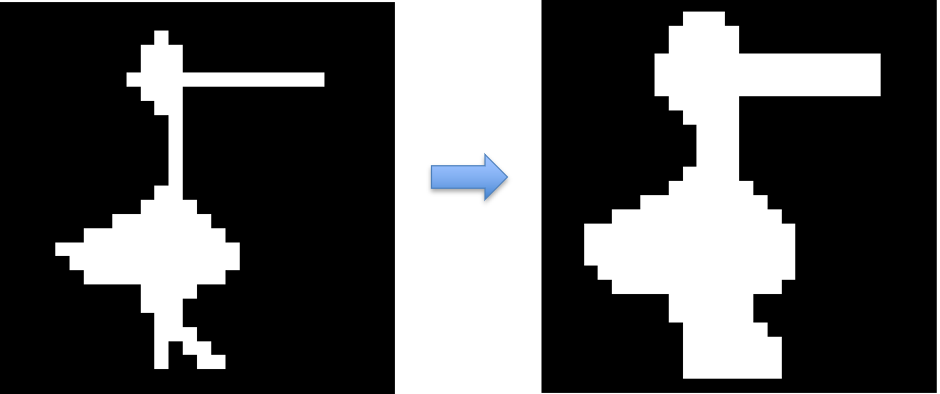

Morfologia
Operaciones Morfologicas
La morfologia es utilizada para manipular la forma de las imagenes, principalmente utilizado en imagenes binarias o en imagenes con tonalidades de grises, este proceso suele ir posterior a la segmentación.
Dilatación
La dilatación es utilizada para aumentar la cantidad de pixeles blancos o "1" en una imagen
S es una matriz binaria que funciona de mascara o ventana deslizante, que se desplaza a lo largo y ancho y hacia arriba y hacia abajo de la imagen, la salida de esta operación será 0 siempre y cuando todos los elementos que se estén operando con la mascara sean cero, de lo contrario será 1. Es decir, cada vez que la estructura tome como entrada algún 1, el centro de dicha estructura será por tanto 1.
Como la estructura es de 3x3, estamos agregando un pixel de dilatación a toda la imagen, si la estructura fuera mayor, por ejemplo de 5x5, la imagen se dilata 2 pixeles alrededor.
Con una estructura de tipo cruz, el resultado puede ser más preciso en los bordes, no perdiendo tanta información de estos.
Erosion
La erosión es utilizada para disminuir la cantidad de pixeles blancos que existen en una imagen
La erosión sigue la misma idea de la dilatación, pero en este caso la erosión tiene como salida "1" si todos los elementos que están dentro de la estructura son "1", de lo contrario se colocará un "0" como resultado en el centro de la estructura.
Esta estructura es muy agresiva, por tanto se pierde demasiada información al pasar la estructura, una estructura de tipo cruz pueded solucionar o ser un poco más precisa a la hora de erosionar una imagen.
Perimetro
A partir de una imagen binaria, se obtiene la frontera de una imagen
El perimetro, es un algoritmo simple utilizando las tecnicas anteriores, por tanto a la imagen original se le resta la operación obtenida por medio de la erosión, esta operación nos permite obtener el perimetro de una imagen.
Relleno
A partir de una imagen binaria, que conforma un perimetro, se puede rellenar una sección de la imagen, tambien puede ser utilizada despues de una segmentación donde hay una sección no rellenada
El proceso de relleno de una imagen, suele ser un poco más complicado, sin embargo no es dificil en su interpretación, la idea principal de este algoritmo
es escoger un pixel semilla que puede ser el centro de nuestra sección a rellenar, la idea es hacer crecer en las 4 direcciones, y repetir de forma iterativa dicho proceso
hasta llegar a la frontera o al perimetro.
Por tanto el algortimo a seguir es el siguiente, se toma una matriz E de bordes, que es el perimetro de la sección a rellenar, una matriz X que será del tamaño de la imagen original, pero
completa de ceros, (i,j) será la posición de la semilla, donde X(i,j) = 1 que será la ubiación de la semilla, defino la estructura S en forma de cruz 3x3,
y realizo una dilatación de dicho pixel blanco, y me aseguro que cuando se realicé la dilatación no toque el borde, por tanto aquellos pixeles que tocan el borde,
serán eliminados o no serán tenidos en cuenta. El algoritmo funcionará hasta que dos imagenes de salida sean iguales, es decir que no hay más dirección hacia donde crecer.
Cierre
El cierre es una operación que nos permite rellenar una sección que no se completó durante la segmentación
La idea principal del cierre es aplicar una dilatación capaz de rellenar todos aquellas secciones internas de la imagen, para posteriormente realizar una erosión que solo disminuya los pixeles dilatados de manera exterior.
Apertura
La apertura es lo contrario al cierre, nos permite eliminar secciones no deseadas de una imagen, por tanto el primer paso es realizar una erosión seguida de una dilatación. Este proceso aveces puede conllevar perdida de información debido a la dilatación
Limpieza
Despues de una segmentación si existen partes que no están perfectas por medio de este operación es posible limpiar dichas impurezas
Esqueletización
Produce un esqueleto de una imagen, erosionando de manera sucesiva la imagen hasta que quede el esqueleto de una imagen
Union
Cuando una linea es interrumpida se puede volver a unir utilizando dicha operación, puede ser utilizada despues de una esqueletización
Gradiente Morfologico
El gradiente morfologico es la resta de ambas operaciones en imagenes que se encuentren en tonos de grises no binarias, obteniendo así una especie de bordes que son obtenidos como el gradiente de la imagen.
Clase 16/11/21
Segmentación basada en similitud/Division y mezcla de regiones
Otra forma de realizar una segmentación basada en la similitud es utilizando la divisón y mezcla de regiones, para esto, se toma toda la imagen como homogenea, al ser falso, la imagen se divide en 4 secciones y en cada sección va realizando la misma operación hasta cumplir que todo sea verdadero.
Luego de realizar la división es normal que se obtenga una sobresegmentación de las regiones, para esto se recomienda por tanto, crear un algoritmo de fusión de regiones que compartan el mismo nivel de gris
La tecnica de divisón se puede representar en un arbol de con 4 nodos hijos, debido a su división en 4 partes, usualmente se conoce como quadtree, donde la raiz de este arbol se destaca por ser la imagen original o completa.
Una tecnica que se utiliza para realizar la división es por medio de la desviación estandard, se define una std y se calcula la media, si existe un valor que supere dicha std se realiza la partición, por ejemplo:
La media de la imagen original está en 134,25 y la std se encuentra en 19,9, es decir que estamos por encima de la desviación estandard que definimos y por tanto realizamos una partición. La única partición que se volverá a dividir será la región C que tiene una desviación que está por encima de 10
Luego la región C al dividirse no tiene mayores desviaciones mayores a 10 en sus subregiones, por tanto tendremos 5 subregiones encontradas.
El paso siguiente a la división es la mezcla, hay que volver a juntas aquellas regiones que adyacentes cuya desviación estandar no sea mayor que la definida.
Para realizar la fusión hay que seguir ciertas reglas y si una zona ya se ha fusionado no puede volver a fusionarse con un bloque adyacente en la priemra iteración, en siguientes iteraciones si se puede realizar.
Finalmente, podemos resumir este método de la siguiente forma
Evaluación de la segmentación
Clase 11/11/21
Segmentos de una imagen
Los segmentos de una imagen R son subregiones que conforman la imagen y están totalmente conectadas, estás segmentaciones se pueden realizar entre discontinuidad y similitud
Segmentación basada en similitud/texturas
Dada una imagen que esté representada en niveles de grises f(x,y) donde los objetos se pueden diferenciar del fondo, una forma de segmentarlos es debido a un umbral definido que separe estos dos lobulos
Por ejemplo:
En la imagen anterior se pueden encontrar 12 segmentos en la imagen, y se pueden colocar
etiquetas en cada una de los segmentos. Las etiquetas a los pixeles se hacen de izquierda a derecha y de arriba hacia abajo.
Las imagenes segmentadas pueden sufrir de sobresegmentación y esto se soluciona con un procesamiento de las etiquetas, comparando
los predicados de cada etiqueta y viendo si son adyacentes y del mismo nivel de gris.
Muchas veces la segmentación binaria no es la adecuada, por tanto una segmentación o umbralización multinivel es necesaria para tener mas información de la foto
o imagen.
A,B,C se recomienda que sean valores lejanos que permitan visualizar de manera correcta la umbralización.
El siguiente paso es saber que tantos niveles de grises se puede separar una imagen, y esto puede diferir para cada imagen
con los niveles de grises en su histograma, el primer problema es que los histogramas están llenos de ruidos debido a su naturaleza discretizada.
Se puede por tanto aplicar un filtro pasabajos para reducir los niveles de ruido que existe en el histograma, se pueden aplicar mascaras de filtro como la mediana, el promedio etc.
Mediante un filtro gausiano, se puede dar mayor peso al valor central esto para evitar perdidas en la información de los niveles de grises, como se puede ver a continuación en distintas mascaras de tamaño 3 y de tamaño 5. SIn embargo, hay distintas formas de generar esta umbralización, puede ser el método triangulo, el método de otsu, algoritmo de busqueda gaussiana,
Umbralización por el método de Otsu
El método de otsu calcula el automaticamente el valor de umbral del histograma de imagen para una imagen bimodal.
Clase 4/11/21
Erosion
La erosion es una tecnica de preprocesamiento morfologico que permite eliminar pixeles de los bordes de una imagen, esto es puede ser para obtener el esqueleto de algún contorno y especificar mejor su forma.
Dilatación
La dilatación realiza el proceso contrario a la erosión, en este caso la dilatación nos sirve para agregar pixeles en los contornos hallados en una imagen, permitiendonos así aumentar el grosor del cuerpo.
Apertura
La apertura es una combinación de las dos operaciones anteriores, es una erosión seguida de una dilatación. Esto se se realiza para eliminar información ruido que este cerca del contorno importante.
Cierre
El cierre realiza el proceso contrario a la apertura, en este caso tenemos una dilatación seguida de una erosion. Esto se realiza cuando se tiene ruido en la parte de la forma principal, esta operación elimina dicho ruido.
Gradiente Morfólogico
Es la diferencia entre la dilatación de la imagen, este tipo de tecnica nos permite contonear una forma o un objeto.
Sombrero de copa
Es la diferencia entre la imagen original y la imagen cuando se realiza una apertura
Sombrero Negro
Es la diferencia entre la imagen tratada con cierre y la imagen original
Hit or miss
Es una opeción binaria morfologica que puede ser usada para buscar patrones particulaes, en el primer plano y el background de una imagen. Intersección entre una apertura y un cierre.
Conceptos Basicos
Imagen Digital Bi-Dimensional
Están compuestas por entidades geometricas simples, se pueden cambiar de escala sin afectar su resolución
BitMap
Filtrado dominio espacial 26/10/21
Realce
El principal objetivo del realce es procesar una imagen para
que el resultado sea más adecuado para una aplicación especifica.
Suelen haber dos categorias para las tecnicas de realce, en el dominio espacial y
el dominio frecuencial.
En el dominio espacial se refieren al plano de la imagen misma, y está basada en la manipulación directa
de los pixeles.
En el dominio frecuencial está basado en modificar la transformada de fourier de la imagen.
La transformada de Fourier por tanto era un tipo de suma ponderada de señales sinusoidales para
representar una señal objetivo.
Las transformadas de Fourier son una forma de realizar una convulución del dominio temporal, en el dominio frecuencial esa convolución se traduce a una multiplicaciones simple de polinomios. Por tanto en un problema que requiere convolución es normal pasarlo al dominio frecuencial realizar la operación pertinente y luego regresarnos mediante la transformada inversa.
Operaciones Puntuales - Umbralización
La operación más simple es cuando el operador T sólo actua en un vecindario de pixel 1x1 en la imagen de entrada, es decir F(x,y) solo depende del valor de F en (x,y). Se conoce como transformacion de escala de gris.

Uno puede aplicar distintos operadores punto a punto para la umbralización, estos pueden ser:

Ecualización del histograma
Es una tecnica para mejorar la apariencia de las imágenes, mediante la manipulación del histograma, buscando que este tenga una distribución uniforme en todo el rango de intensidades.
Operaciones locales
El dominio espacial se denota por la expresión: g(x,y) = T[f(x,y)] , donde f(x,y) es la imagen de entrada, g(x,y) es la imagen procesada y T es el opreador en f definido sobre un vecindario (x,y)
En general utilizan la operación de convulución en señales bidimensionales para señales discreta y periodicas.

En una mascara puedo hacer distintas operaciones, como puede ser una reflexión, rotación, etc. Para el caso de rotación si tengo una matriz de 3x3 de la siguiente forma [1 2 3; 4 5 6; 7 8 9] tendré una reflexión de la forma [9 8 7; 6 5 4; 3 2 1].
Una vez obtenida la mascara lo que puedo hacer es multiplicar punto a punto y sumo los valores para obtener el valor del pixel
en cuestión.
Filtros lineales de suavizado
Estos filtros en general corresponden al promedio de un vecindario
definido por una máscara, son filtros pasabajos.
Reducen el ruido pero también suavizan los contornos o bordes
La segunda mascara tiene un comportamiento gausiano dandolemás valor al pixel central.
Se muestra por tanto diferentes suavizados con distintos tamaños de mascaras, de tamaño 3 5 9 15 y 35:
Al aumentar el tamaño de la mascara, se puede decir que se reitera ventanas pequeñas, es decir,
que una mascara de ventana 15 reitera varias veces mascaras de ventana 3.
Al realizar un filtrado, información se pierde en el proceso y no se puede revertir un filtrado.
Filtro no-lineales de orden estadístico
Son filtros cuya respuesta está basada en el orden de los pixeles contenidos en el área de la imagen
- Mediana
- Maximo
- Minimo
- Moda
Una comparación entre filtro por promedio y mediana se ve a continuación:
Claramente el filtro por mediana mejora la visualización de los elementos de la imagen a la cual
se le ha añadido ruido. Pero este resultado no es lineal debido a que no se obtiene el mismo
resultado si se aplica la mediana primero en x y luego en y y viceversa.
Filtro de Realce
El objetivo de estos filtros es resaltar detalles finos o realzar detalles que han sido difuminados.
El realce es similar a la diferenciación espacial. Derivada de primer orden en una dimensión:
df/dx = f(X + 1) - f(x)
Derivada de segundo orden en una dimensión: d^2t/dx^2=f(x + 1) + f(x - 1) - 2f(x)

Es un filtro derivativo isotrópico, definido por:
Podemos obtener distintas implementación de máscaras del laplaciano como se observa en la imagen de arriba, sin embargo siempre la suma debe ser 0.

Podemos aplicar realce a los contornos de cualquier imagen
Uso de la primera derivada en realce
Se utiliza la magnitud del gradiente. Para una función f(x,y), el gradiente de f en las coordenadas (x,y ), está definido por:
Filtro de Sobel
Utiliza dos máscaras o filtros: una para detectar los bordes verticales y otra para
detectar los bordes horizontales.
Así, para obtener los bordes completos se realiza la suma de las imagenes que resultan con los bordes verticales y
horizontales
Filtro de Prewitt
Consta de 8 matrices que se aplican pixel a pixel a la imagen. Luego se suman las imagenes para obtener los bordes bien marcados.

Detector de Bordes de Canny
No es una operación punto a punto como las anteriores, pero es una función completa para realizar un filtrado.
Utiliza un algortimo de múltiples etapas para detectar una amplia gama de bordes en las imagenes.
Modelos de Color
Los modelos de color son formas de representar las imagenes, normalmente se utiliza RGB, , pero existen otros modelos como BRG, CYM y demás.
Existen 3 planos para cada color, por tanto la adición de los planos representa el color de la imagen R+G+B .
Asignarlos como 0 un plano no evita que la imagen sea a color, para eliminar un color por completo es preferible borrar el plano.
Existen dos categorías de proceso:
- Cada componente de la imagen se procesa individualmente y finalmente se forma la imagen de color procesada a partir de las componentes.
- Se trabaja con los píxeles en color directamente

Suavizado de imagenes en color
El filtro promedio es un filtro de suavizado definido por:
Donde S_xy las coordenadas del vecindario centrado en x,y

Realce de imágenes en color
Empleamos la técnica que utiliza el laplaciano